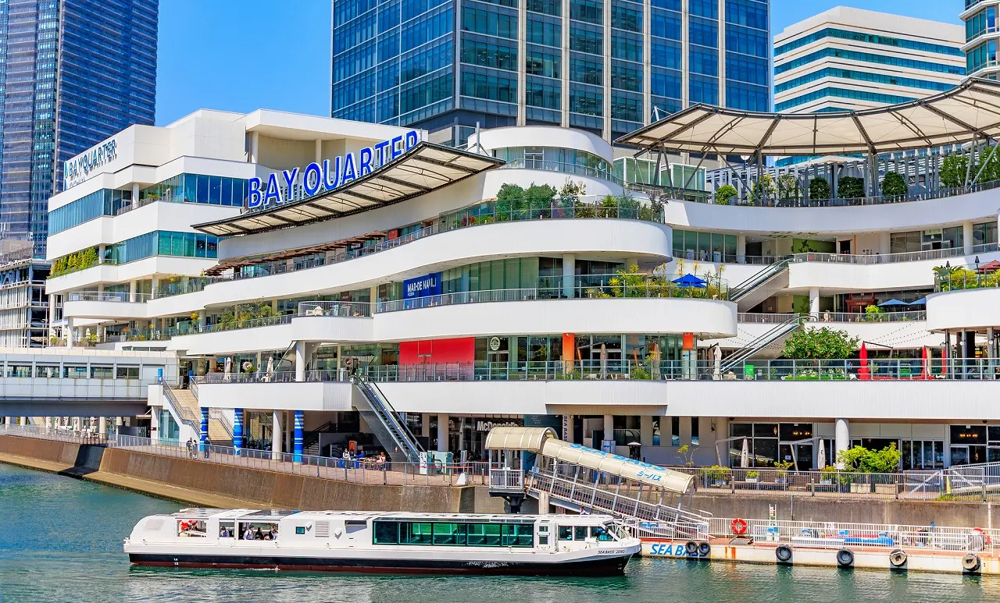
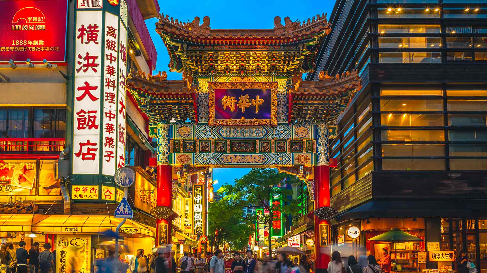

Nara é uma cidade histórica conhecida por seu rico patrimônio cultural e por ter sido a primeira capital permanente do Japão. A cidade abriga marcos icônicos como o Todai-ji, que possui a colossal estátua do Grande Buda, e o Kasuga Taisha, famoso por suas milhares de lanternas de pedra e bronze. O Parque de Nara é um destaque, onde cervos sagrados vagam livremente. Além dos templos, Nara oferece belos jardins como Isuien e Yoshikien, e uma rica coleção de arte budista no Nara National Museum. Com ruas como Sanjo Dori e Higashimuki Shopping Street, repletas de lojas e restaurantes tradicionais, Nara combina história, cultura e natureza de maneira única.
 